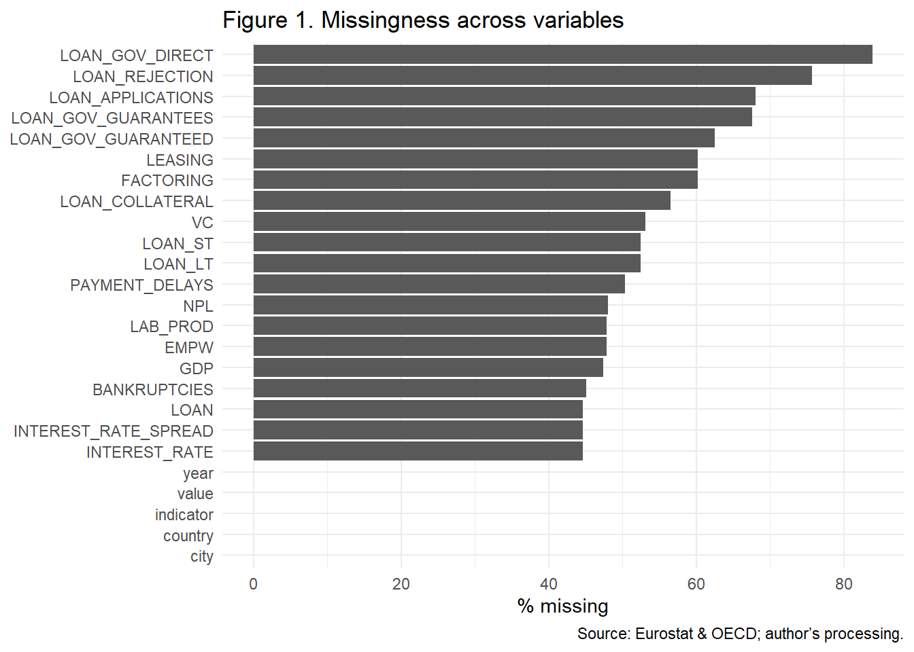
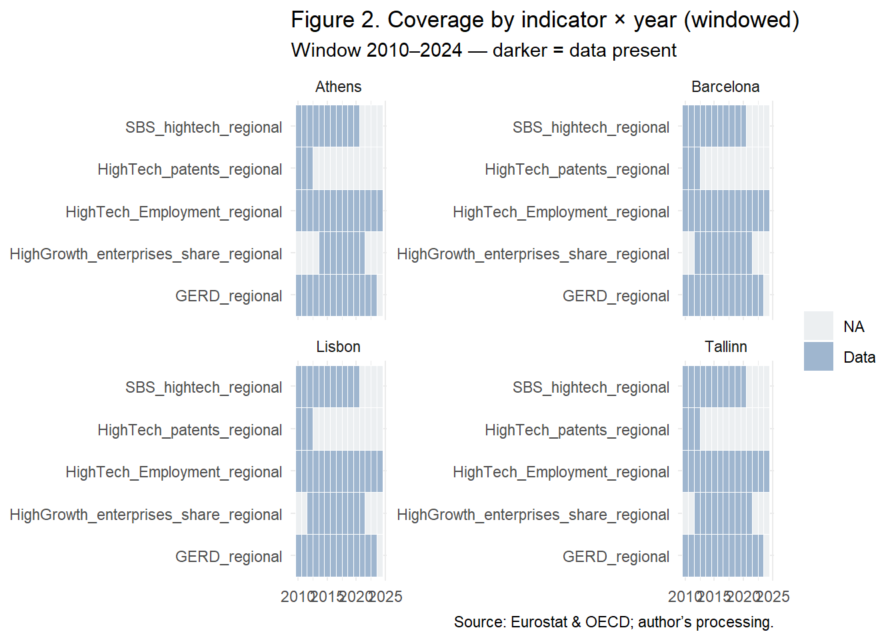
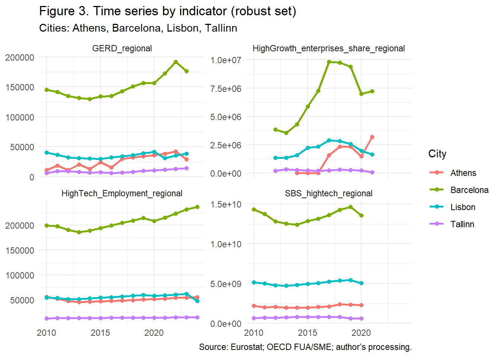
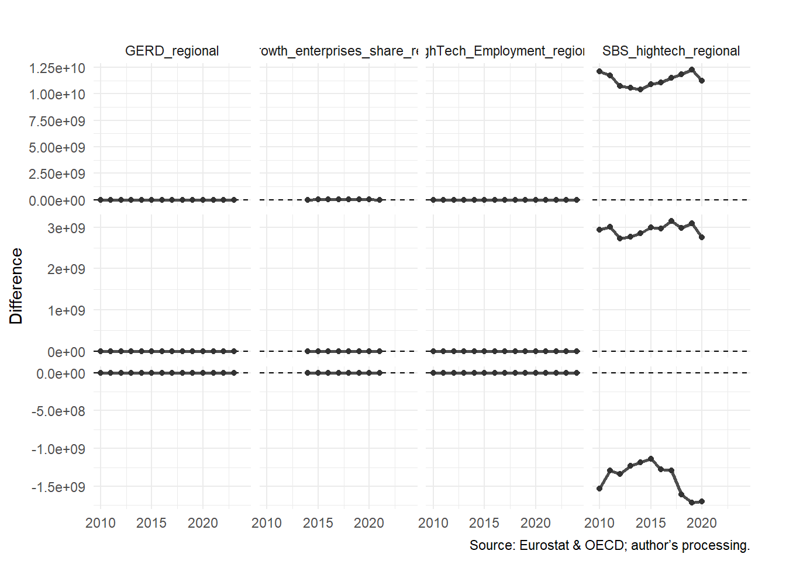
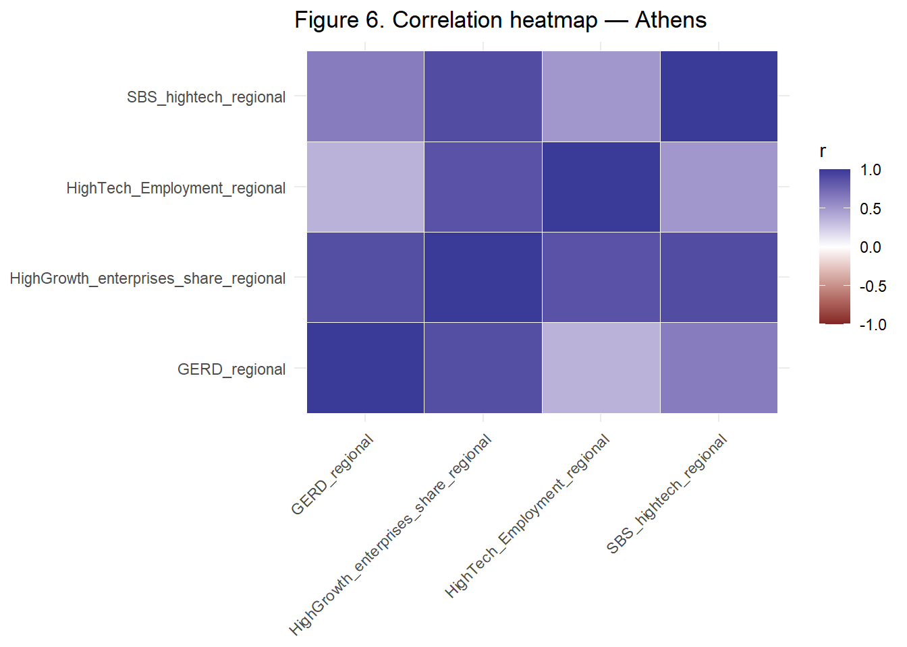
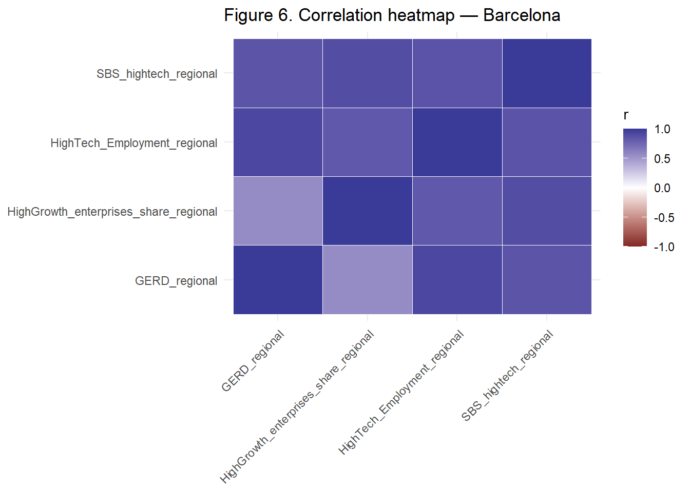
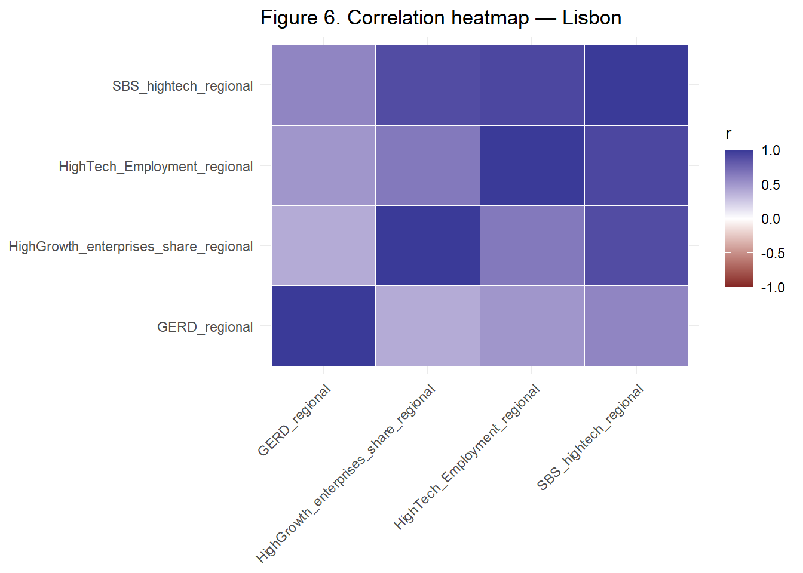

Quantitative Analysis — Tallinn vs Barcelona (Parametrised, Robust & Transparent)
0) Setup & Data Load
Data loaded. Cities: Barcelona, Tallinn. Full-span years: 1982–2024.
Analysis window: 2010–2024.
Robustness rules: ≥ 70% completeness and ≥ 5 non-missing years in each city.
1) Sanity & Completeness Checks
Purpose. Establish coverage before comparison to avoid biased inference.
Narrative. Figure 1 shows relatively better coverage for innovation outputs and thinner coverage for some SME-finance proxies. We prioritise well-covered indicators for cross-city comparisons and treat sparse finance indicators descriptively.
2) Robust Indicator Set (Window + Thresholds)
Rule. An indicator is robust if, within 2010–2024, each city has completeness ≥ 70% and ≥ 5 non-missing years.
Robust indicators (count): 2
Preview:
# A tibble: 2 × 1
indicator
<chr>
1 VentureCapital_pct_GDP
2 HighGrowth_enterprises_share2b) Coverage Map (Indicator × Year, by City — Discreet)

3) Descriptive Exploration (Time Series)

Narrative. Figure 3 suggests a pattern of Barcelona’s earlier strength with evidence of Tallinn’s catch-up on several innovation indicators.
4) Cross-City Comparison (Levels & Differences)

Narrative. In several indicators the gap narrows toward the end of the window, consistent with a convergence/catch-up dynamic.
5) Normalisation for Comparability (Index = 100 at Base Year)
Purpose. Compare relative growth paths independent of scale. We index each indicator by city to 100 at its first non-missing year within the window.
Narrative. Figure 5 reveals relative momentum: Tallinn often shows steeper indexed growth, while Barcelona exhibits steadier, less volatile paths.
6) Association Diagnostics (Adaptive & Informative)



Narrative. With only two robust indicators, heatmaps are uninformative; the adaptive diagnostics substitute standardised co-movement, scatter with linear fits, and rolling correlation to reveal direction, strength, and stability of association. For 3+ indicators, we retain heatmaps and add a pairwise scatter grid.
7) Quantitative Synthesis (Short Narrative)
Taken together, Figures 3–6 suggest the following.
(1) Indicators meeting robustness criteria provide a clean basis for comparison; sparse SME-finance proxies remain descriptive.
(2) Barcelona’s earlier advantage is visible in levels, while Tallinn displays steeper indexed growth (Figure 5) and higher episodic momentum in some periods.
(3) Cross-city differences (Figure 4) tend to narrow toward the end of the window on several indicators, consistent with catch-up.
(4) Association diagnostics (Section 6) show synchronisation in standardised movements and positive city-wise slopes, with time-varying correlation indicating phases of stronger coupling likely coincident with policy cycles; these will be triangulated against policy timelines in the qualitative chapter.
Indicator Dictionary (Auto-generated)
# A tibble: 3 × 2
indicator source_hint
<chr> <chr>
1 HighGrowth_enterprises_share Eurostat (innovation/high-tech)
2 HighTech_patents Eurostat (innovation/high-tech)
3 VentureCapital_pct_GDP OECD (FUA/SME finance) Exports & Reproducibility
- CSVs:
outputs/step1_missingness_by_variable.csv,outputs/step2_*,outputs/step4_difference_series_robust.csv,outputs/step5_*,outputs/step6b_rank_correlations_by_city.csv,outputs/indicator_dictionary.csv
- Figures:
figures/step*.png
Session info:
R version 4.5.1 (2025-06-13 ucrt)
Platform: x86_64-w64-mingw32/x64
Running under: Windows 11 x64 (build 26100)
Matrix products: default
LAPACK version 3.12.1
locale:
[1] LC_COLLATE=English_United Kingdom.utf8
[2] LC_CTYPE=English_United Kingdom.utf8
[3] LC_MONETARY=English_United Kingdom.utf8
[4] LC_NUMERIC=C
[5] LC_TIME=English_United Kingdom.utf8
time zone: Europe/London
tzcode source: internal
attached base packages:
[1] stats graphics grDevices utils datasets methods base
other attached packages:
[1] jsonlite_2.0.0 ggplot2_3.5.2 tidyr_1.3.1 dplyr_1.1.4 readr_2.1.5
loaded via a namespace (and not attached):
[1] Matrix_1.7-3 bit_4.6.0 gtable_0.3.6 compiler_4.5.1
[5] crayon_1.5.3 tidyselect_1.2.1 parallel_4.5.1 splines_4.5.1
[9] textshaping_1.0.1 systemfonts_1.2.3 scales_1.4.0 yaml_2.3.10
[13] fastmap_1.2.0 lattice_0.22-7 R6_2.6.1 labeling_0.4.3
[17] generics_0.1.4 knitr_1.50 htmlwidgets_1.6.4 tibble_3.3.0
[21] pillar_1.11.0 RColorBrewer_1.1-3 tzdb_0.5.0 rlang_1.1.6
[25] utf8_1.2.6 xfun_0.52 bit64_4.6.0-1 cli_3.6.5
[29] mgcv_1.9-3 withr_3.0.2 magrittr_2.0.3 digest_0.6.37
[33] grid_4.5.1 vroom_1.6.5 rstudioapi_0.17.1 hms_1.1.3
[37] nlme_3.1-168 lifecycle_1.0.4 vctrs_0.6.5 evaluate_1.0.4
[41] glue_1.8.0 farver_2.1.2 ragg_1.4.0 rmarkdown_2.29
[45] purrr_1.1.0 tools_4.5.1 pkgconfig_2.0.3 htmltools_0.5.8.1